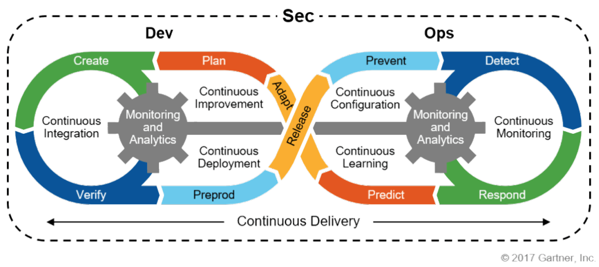
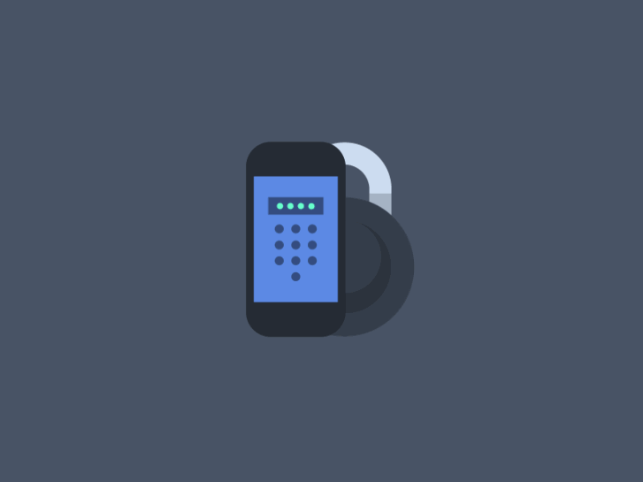

Application Security
A segurança do aplicativo (AppSec) inclui todas as tarefas que
introduzem um ciclo de vida de desenvolvimento de software seguro para as
esquipes de desenvolvimento. Tem como objetivo final aprimorar a segurança,
localizar, corrigir e prevenir problemas de segurança nos aplicativos.

AppSec Cycle
Para aumentar a segurança de um aplicativo, são efetuados vários tipos de
abordagens, nomeadamente:
- Revisão de design - á medida que se avança no processo de desenvolvimento o custo de corrigir uma falha aumenta, portanto, de certeza que
vale mais a pena fazer revisões á medida que se realiza a aplicação para
descobrir erros mais cedo, corrigindo-os e evitado menos custos. Logo,
fazer várias revisões de design são uma boa `política';
- Revisão de segurança da caixa branca ou revisão de código - é
uma atividade para melhorar a qualidade do software, para tal, uma ou
mais pessoas reúnam-se para analisar um dado programa (lendo partes
do seu código-fonte), de modo a atingir vários objetivos como melhorar a
qualidade do código, encontrar defeitos, aprendizagem de conhecimento,
aumentar o senso de responsabilidade mútua, encontrar melhores soluções e até mesmo em conformidade com as diretrizes de QA, padrões
Internatonal Organization for Standardization/Interantional Electrotechnical Commission (ISO/IEC), principalmente para software de tráfico rodoviário/aéreo/náutico, devido de estarem em `jogo' vidas, ou dano grave
ao equipamento. Mas atenção, pelos menos uma das pessoas que realizam
a revisão ("revisores") não deve ser o(s) autor(es) do código;
- Auditoria de segurança da caixa preta - utilização de um aplicativo
para testá-lo quanto a vulnerabilidades de segurança, sem necessidade de
código-fonte. Por exemplo, o teste de intrusão, é um método para avaliar a segurança de um sistema, simulando um ataque malicioso, tendo
como objetivo encontrar alguma má configuração do sistema, exemplifli-
cando, falhas no software/hardware desconhecidas e deficiência no sistema
operacional.
- Ferramentas automatizadas - Dynamic Application Security Testing/Static
Application Security Testing (DAST/SAST) é um exemplo de ferramenta
para testar o sistema, esta executa um teste de caixa preta (ou seja, teste
de intrusão (penetration test)).
- Plataformas de vulnerabilidade coordenadas - ou melhor, programa
de recompensa de bugs, que é um acordo oferecido por muitos sites, organizações e desenvolvedores de software, com o objetivo de reconhecer
e compensar aqueles que relatam bugs de seus aplicativos. Tendo também como propósito, diminuir a quantidade de pessoas que descobrem
esse bug podendo até utilizá-lo para prejudicar outros utilizadores, como
também a reputação da aplicação. Mas caso oferecem recompensas por
relatos de bugs podem diminuir certas catástrofes, pois as pessoas relatam
imediatamente o/s bug/s para tentar receber algum prestígio ou dinheiro,
contribuindo assim também para a empresa melhorar o seu produto. Várias empresas/organizações entraram neste programa, como por exemplo
a Mozilla, Facebook, Yahoo!, Google, Reddit, Square, Microsoft, até várias agências governamentais dos EUA, reverteram o curso da ameaça de
"white hat"hackers (os hackers `bons') para convidá-los a participar de
uma estrutura abrangente de divulgação de vulnerabilidade.
